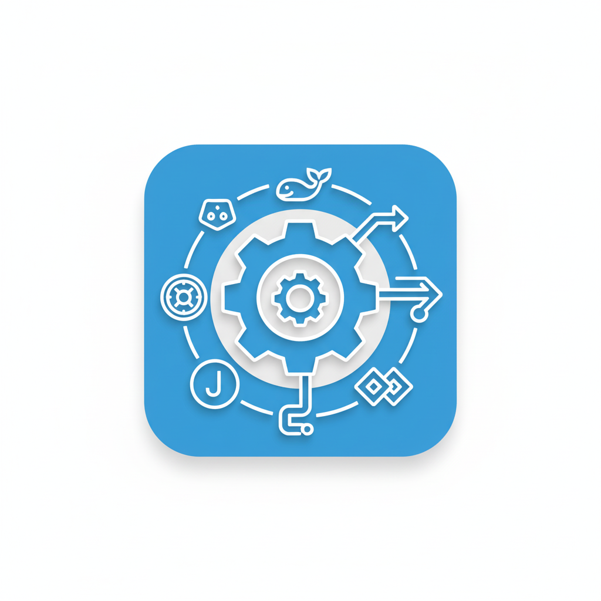

Muhammad Waqas
DevOps Engineer
Professional Summary
Experienced **DevOps Engineer** with around 3 years of experience specializing in DevOps and automation[cite: 7]. Skilled in Kubernetes, CI/CD pipelines, Ansible, Docker, GitHub, GitLab, Linux, and Jenkins[cite: 8]. Proficient in **AWS and Azure** cloud computing (Associate level)[cite: 9]. Expert in optimizing deployment processes and enhancing system reliability with innovative cloud solutions[cite: 9]. Experienced in **DevSecOps** practices to ensure secure and compliant software delivery[cite: 10].
Work Experience
DevOps Engineer - OpsOura [cite: 12]
June 2024 - Present [cite: 13]
- Delivered scalable cloud infrastructure and automated CI/CD pipelines using **GitHub Actions**, **GitLab CI/CD**, Travis CI, Anchore, and SonarQube, reducing deployment time from hours to minutes[cite: 14].
- Managed **AWS** and **Azure** cloud environments, provisioning infrastructure with **Terraform** and **Ansible** for high-availability, fault-tolerant systems[cite: 15].
- Optimized **Kubernetes** clusters using resource limits, namespaces, health probes, and managed workloads with Deployments, ReplicaSets, and Services; configured Ingress controllers and **Helm** charts for scalable routing[cite: 17, 18].
- **GitOps Automation with Argo CD & Argo Workflows**: Implemented GitOps workflows for Kubernetes clusters, automating continuous deployments via YAML-based pipelines[cite: 22, 23].
Frontend Web Developer [cite: 24]
Feb 2022 - March 2024 [cite: 25]
- Developed and maintained responsive web applications using **HTML5**, **CSS3**, **JavaScript**, and **React**[cite: 27].
- Optimized website performance with code splitting, lazy loading, and asset minification[cite: 28].
Skills & Certifications
 DevOps Tools & Practices
- Docker, Kubernetes [cite: 33]
- CI/CD Pipeline Development, Jenkins, CircleCI [cite: 33]
- Ansible, Terraform & Terraform-Cloud [cite: 33]
.png) Cloud Computing
Cloud Computing
- **AWS**: EC2, S3, Lambda, IAM, CloudFormation, VPC [cite: 34]
- **Azure**: CosmosDB, Function App, Storage, IaC, CLI [cite: 34]
.png) Languages & OS
Languages & OS
- Bash, Python, HTML, CSS, JavaScript [cite: 39]
- Ubuntu, Fedora, Windows, AlmaLinux, CentOS [cite: 38]
.png) DevSecOps & Version Control
DevSecOps & Version Control
- Trivy, Anchore, SonarQube [cite: 35]
- Git, GitHub, GitLab [cite: 37]
Certifications
- **Microsoft Certified: Azure Administrator Associate (AZ-104)** [cite: 46]
Education
Bachelors in Computer Science - The University of Lahore [cite: 48]
Sep 2016 - Aug 2020 [cite: 52]